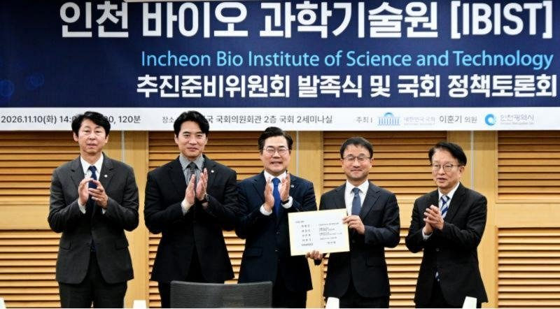

인천바이오과학기술원 준비위 국회서 출범…수정 법안 민주당 지도부에 전달
의약품 수출 61.3% 내는 인천, 연구인력 키울 기관은 아직 없어
AI경제저널=김갑봉 기자 | 인천시가 인천바이오과학기술원(IBIST) 설립 추진준비위원회를 국회에서 띄웠다. 시는 10일 국회의원회관에서 발족식과 정책토론회를 열었다. 이 자리에서 설립 근거법의 수정안을 더불어민주당 지도부에 건넸다.

공동위원장 넷, 위원 24명
행사는 인천시와 이훈기 국회의원(인천 남동을)이 함께 열었다. 한병도 원내대표와 권칠승 정책위의장 등 민주당 지도부와 인천 지역 국회의원들이 자리했다.
시에 따르면 대학·병원·바이오기업 관계자 등 100여 명이 모였다. 과학기술정보통신부 관계자도 나와 지역 의견을 들었다.
추진준비위원회는 24명이다. 공동준비위원장은 박찬대 시장, 최기영 인하대 총장, 이길여 가천대 총장, 서진석 셀트리온 대표이사다. 삼성바이오로직스·SK바이오사이언스 대표와 박종혁 시의회 의장도 위원이다.
근거법은 「인천바이오과학기술원법」이다. 박 시장이 국회의원이던 지난 4월 대표발의한 법이다. 시가 이날 건넨 수정안에는 수도권 규제 특례와 특정연구기관 지위 부여 조문이 있다.
수정안은 국가의 책무와 비수도권과의 상생 협력 조문도 담고 있다. 이 의원은 "필요하다면 신속처리안건 지정 등 가능한 국회 절차를 적극 검토해 입법에 속도를 내겠다"고 말했다.
IBIST가 인천에 말하는 것
첫째, 생산과 연구의 간극이다. 시에 따르면 송도의 바이오의약품 생산능력은 116만 리터다. 지난해 우리나라 의약품 수출의 61.3%인 65억 8천만 달러가 인천에서 나왔다.
그러나 신약 원천기술과 석·박사급 연구인력을 길러 낼 전문 기관은 인천에 아직 없다. 시가 연구 기반에 힘을 모으는 까닭이 여기에 있다고 시는 설명한다.
둘째, 수도권 규제다. 시는 송도가 수도권 규제로 대학 신설이 엄격히 제한된다고 본다. 그래서 개별 특별법으로 과학기술원을 세우는 것이 사실상 유일한 해법이라는 것이 시의 판단이다.
시가 본보기로 든 KAIST·GIST·DGIST·UNIST는 「한국과학기술원법」처럼 각각 제 이름의 법을 근거로 둔다. 4월 국회 과학기술정보방송통신위원회 회의 안건에도 광주·대구경북·울산과학기술원법 개정안이 따로 올랐다. 네 곳은 모두 비수도권에 있다.
셋째, 법안이 넘어야 할 문턱이다. 김상길 시 미래산업본부장은 토론회에서 5대 과제와 대응 조문을 내놨다. 수도권 규제 특례, 특정연구기관 지위 확보, 국가 재정지원 경로 등이다.
넷째, 일터의 수요다. 고유상 삼성바이오에피스 부사장은 지정토론에서 산업 현장의 인재 수요를 짚었다. 위원들은 "법이 한 해 늦어지면 첫 졸업생도 한 해 늦어진다"며 입법을 서둘러 달라고 했다.
참석자들은 IBIST가 기존 대학과 경쟁하는 기관이 아니라고 했다. 공동학위·공동연구로 함께 크는 대학원 중심 연구기관이어야 한다는 데 뜻을 모았다.
다섯째, 발표에 없는 것이다. 설립에 드는 돈과 학생 정원, 문을 여는 해는 이날 자료에 없다. 수정안을 언제 다시 발의할지도 자료에 담기지 않았다.
시는 특별법 제정과 국비 확보에 속도를 내고, 내년 1월 범시민추진위원회를 정식 출범시킬 계획이다. 송도의 생산기반, 남동의 소재·부품·장비 산업, 영종의 바이오산업 기반을 잇겠다는 것이 시의 방침이다.
참고문헌
- 인천광역시 바이오과(2026). 인천시,‘인천바이오과학기술원(IBIST)’설립 국회서 첫발(보도자료). 2026년 11월 10일. https://www.incheon.go.kr/IC010205/view?repSeq=DOM_0000000015941325
- 국회사무처(2026). 과학기술정보방송통신위원회 회의록 제434회 제3차(2026년 4월 9일). 국회도서관 https://dl.nanet.go.kr/detail/PROC2026N054161
- 국가법령정보센터. 한국과학기술원법. https://www.law.go.kr/lsInfoP.do?lsiSeq=195336
[사진 출처]
- [사진1] 인천시 인천인터넷방송 포토시정 「인천바이오과학기술원(IBIST) 설립 추진준비위원회 발족식 및 국회 정책토론회」(2026.11.10) https://www.incheon.go.kr/intv/TV010201/3094359
관련기사
- [인천경제&경제사③] 관세는 빚 담보로, 쌀은 인천 부두로… 개항기 인천의 두 길
- 인천 전셋값 올해 4.71% 상승, 집값의 여섯 배
- [인천경제&경제사②] 1883년 인천 개항장, 관세권은 일부 회복, 조계 땅은 「영구히」 조차
저작권자 © AI경제저널 무단전재 및 재배포, AI학습 및 활용 금지